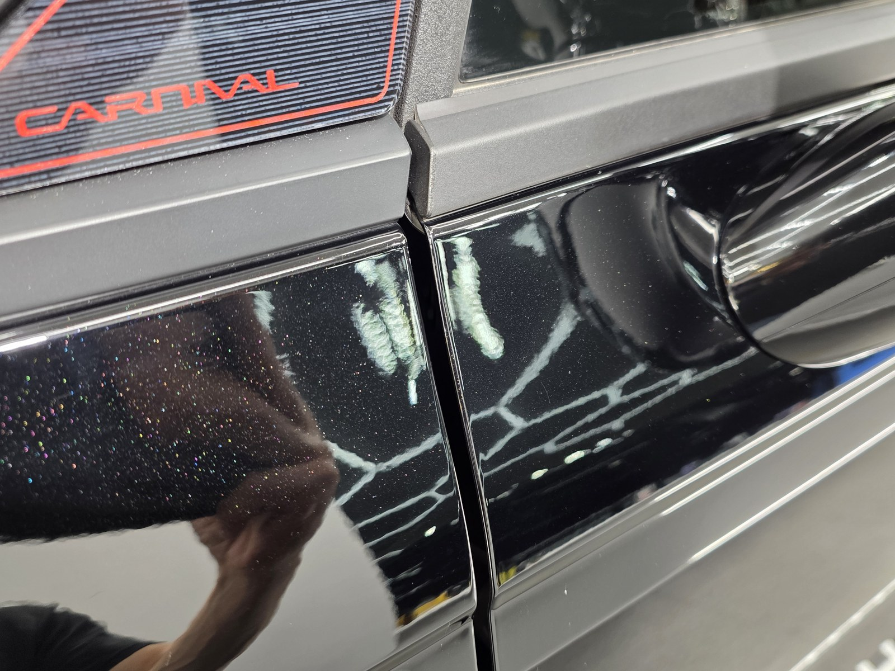
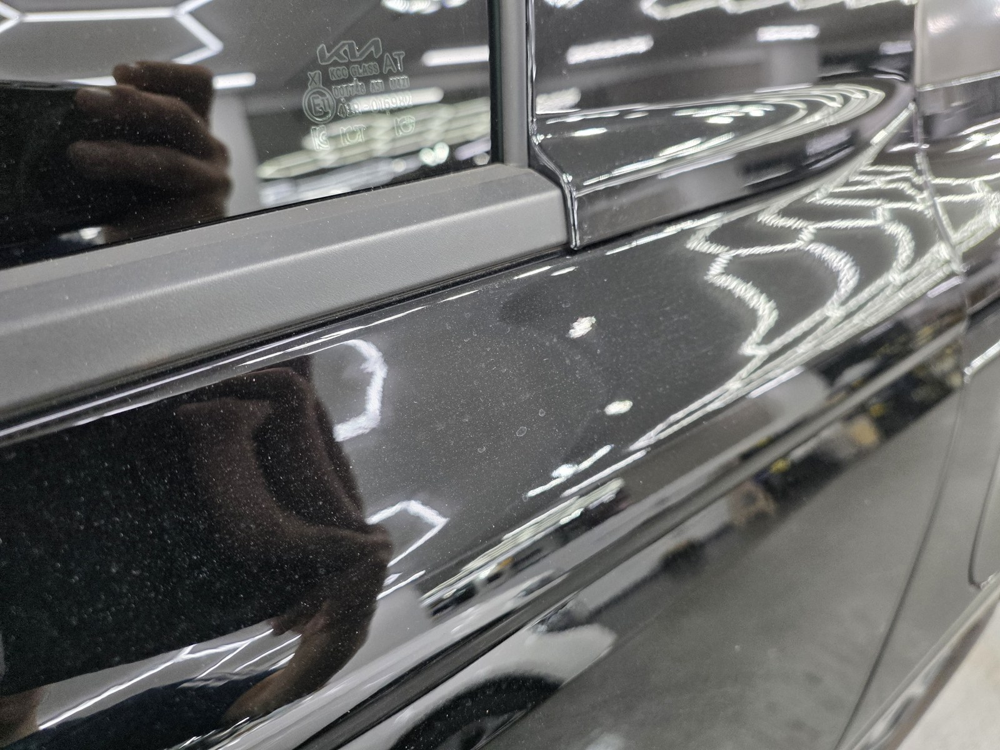
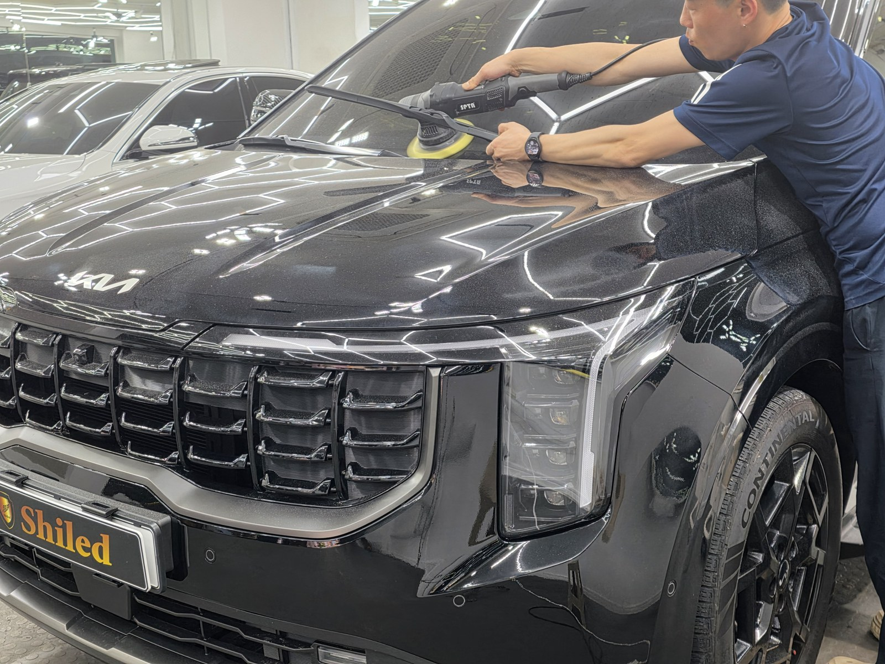
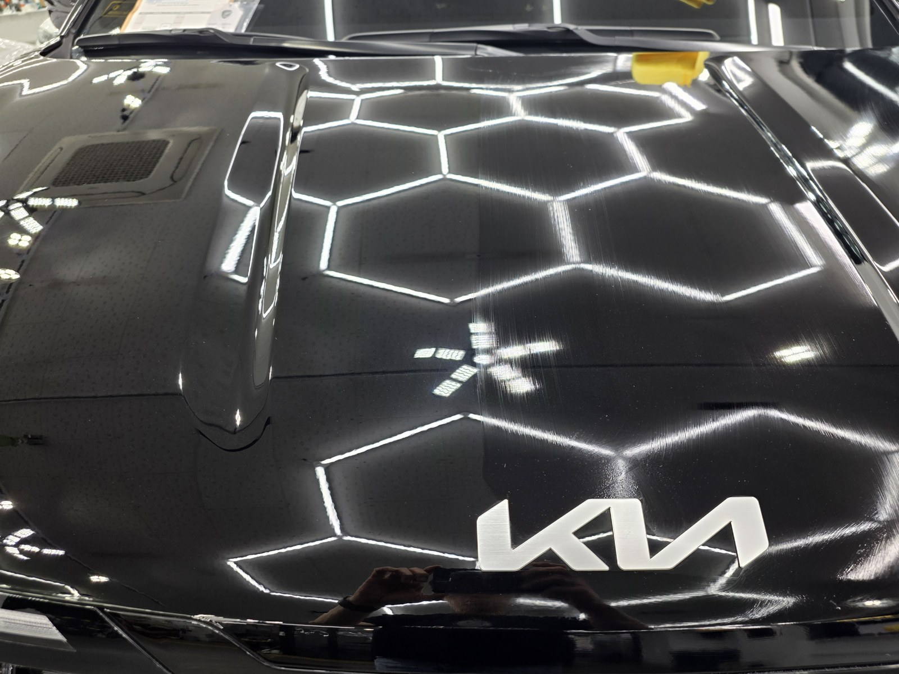
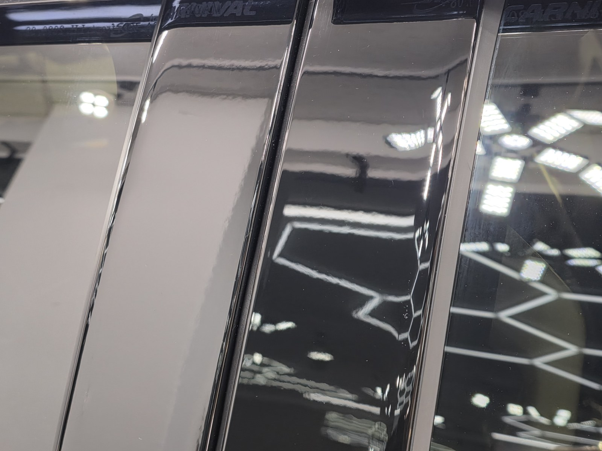
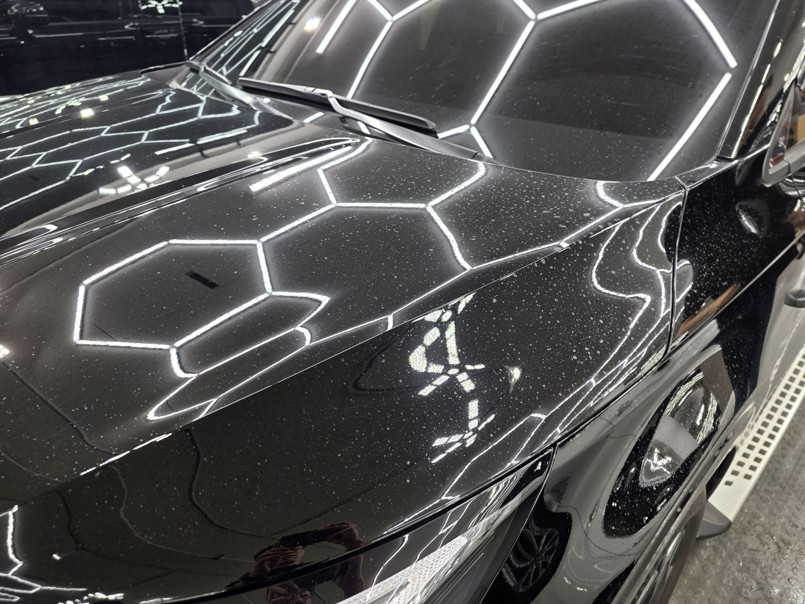
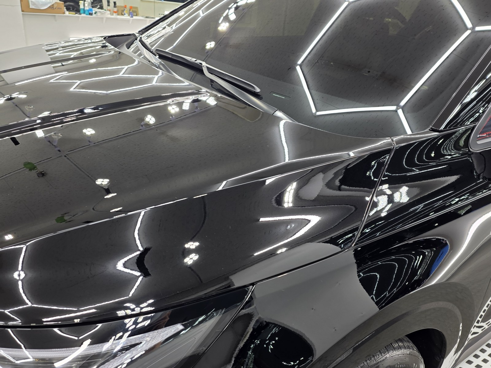
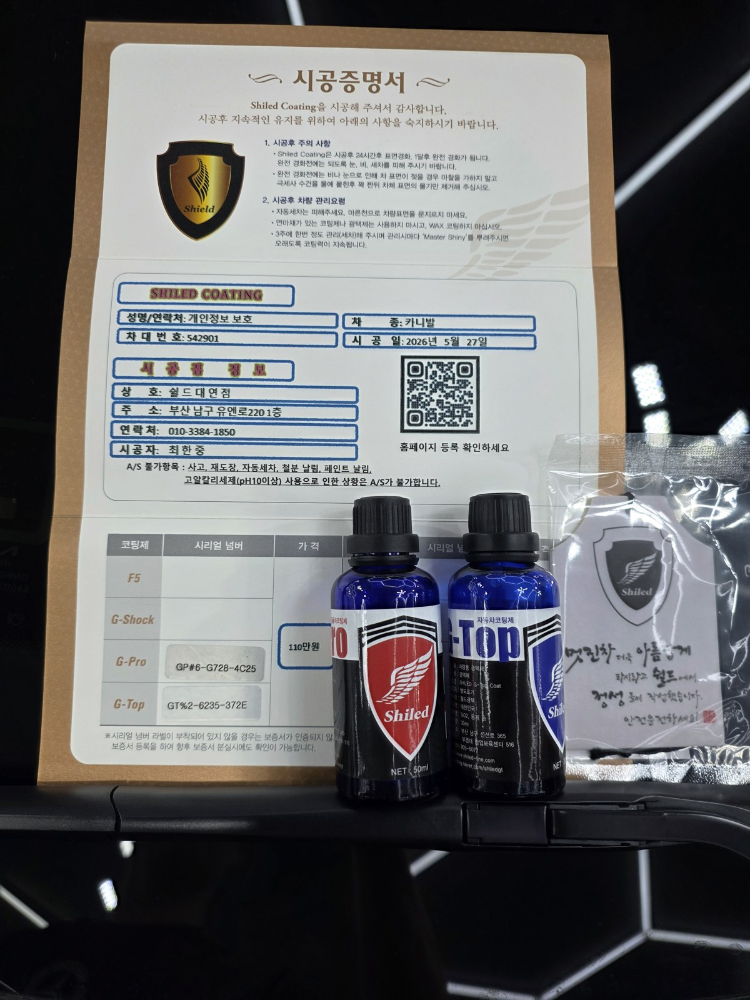

부산 쉴드광택에 들어온 기아 카니발입니다. 검정 바디입니다.
이 차는 석회 물때를 제거광택으로 걷어내고, G-PRO·G-TOP 듀얼코팅으로 마감했습니다.

검정 차에 흰 점이 잔뜩 보이는데 무엇인가
대부분 석회 물때(워터스팟)입니다.
비를 맞거나 물이 튄 뒤 그대로 마르면, 물 속 미네랄 성분이 점처럼 남습니다. 검정은 색이 짙어 이 흰 점이 특히 잘 보입니다. 카니발은 차체가 커서 점이 넓게 깔려 더 눈에 띄었습니다.

광택 전. 도어 패널에 흰 점처럼 물때가 박혀 있습니다
석회 물때는 닦아서 지워지지 않습니다
천으로 문질러도 빠지지 않는 단계입니다.
물이 마르면서 남은 미네랄이 도장면에 자국으로 굳은 상태이기 때문입니다. 표면에 박힌 자국이라, 광택으로 그 층을 걷어내야 정리됩니다.
기술자의 팁
물때를 오래 방치하면 미네랄이 도장을 파고들어 자국이 깊어집니다. 그만큼 광택으로 걷어내야 할 양이 늘어납니다. 물때는 보이는 즉시 잡는 게 도장에도 좋습니다.
제거광택 전, 전처리가 9할입니다
물때를 걷어내기 전에 바탕부터 깨끗해야 합니다.
디테일링 세차로 표면 오염을 걷어내고, 철분 제거제로 박힌 쇳가루를 녹여냅니다. 이 과정을 건너뛰고 패드를 대면, 박힌 오염이 패드에 끌려 오히려 새 잔기스를 만듭니다. 눈에 안 보이는 오염까지 잡는 게 퀄리티의 시작입니다.

제거광택. 물때가 박힌 층을 패드로 걷어냅니다
물때를 걷어낸 뒤, 왜 코팅까지 하나
물때를 걷어내도 맨 도장 상태면 또 물이 마르면서 자국이 남습니다.
그래서 발수·방오가 강한 코팅을 한 번에 올렸습니다. 물이 맺혀 굴러떨어지면 물때가 자리 잡기 어렵습니다.
듀얼코팅은 G-PRO와 G-TOP을 겹쳐 올리는 방식입니다. G-PRO는 저희 제품 중 경도가 가장 높은 하드코팅으로 스크래치 내성을 담당합니다. G-TOP은 발수·방오 성능이 강해 물과 오염을 밀어냅니다. 물때 재발을 막아야 하는 차에 잘 맞는 조합입니다. 코팅제는 대표가 화학공학 전공으로 직접 개발·제조한 제품입니다.

마감 후
흰 점이 깔려 있던 도장면이 정리됐습니다.
검정 위로 헥사 조명이 또렷하게 맺히고, 점 하나 없이 떨어지는 반사가 물때를 걷어내고 코팅막이 고르게 올라갔다는 증거입니다.

물때 자국, 같은 검정면이 어떻게 달라지나
말로 "물때를 걷어냈습니다"라고 하는 것보다, 같은 자리를 전후로 비교하는 게 정확합니다.
아래 사진은 작업 전과 작업 후에 같은 보닛 자리를 같은 조명 아래에서 찍은 것입니다.


보닛 — 점처럼 박혀 있던 물때가 정리됐습니다

모든 시공 차량에 시공증명서와 사용한 코팅제 정보를 함께 드립니다
시공 후, 이렇게 관리하세요
코팅은 시공으로 끝이 아닙니다. 관리로 수명이 갈립니다.
완전 경화 전(약 하루)에는 비·눈·세차를 피해 주십시오. 비를 맞았으면 물기가 마르기 전에 닦아주시면 물때가 다시 자리 잡는 걸 막을 수 있습니다. 자동세차(기계세차)는 브러시가 잔기스를 만드니 피하시는 게 좋습니다. 3주에 한 번 관리 세차 때 전용 관리제 '마스터샤이니'를 뿌려주시면 코팅력이 오래 유지됩니다.
자주 묻는 질문
Q. 석회 물때(워터스팟)는 닦으면 지워지지 않나요?
A. 닦아서 지워지는 단계는 이미 지났습니다. 물이 마르면서 남은 미네랄이 도장면에 자국으로 굳은 것이라, 천으로 문질러도 빠지지 않습니다. 광택으로 그 층을 걷어내야 정리됩니다.
Q. 검정 차에 흰 점이 잔뜩 보이는데 무엇인가요?
A. 대부분 석회 물때입니다. 물이 튄 뒤 그대로 마르면 미네랄이 점처럼 남습니다. 검정은 색이 짙어 이 흰 점이 특히 잘 보이고, 카니발처럼 차체가 큰 차는 더 넓게 깔려 보입니다.
Q. 물때를 제거한 뒤 코팅을 왜 같이 하나요?
A. 물때를 걷어내도 맨 도장이면 또 물이 마르면서 자국이 남습니다. 발수·방오가 강한 코팅을 올리면 물이 맺혀 굴러떨어져 물때가 자리 잡기 어렵습니다. 그래서 제거광택과 코팅을 한 번에 진행합니다.
Q. 듀얼코팅(G-PRO+G-TOP)은 어떤 조합인가요?
A. G-PRO는 경도가 높아 스크래치 내성을, G-TOP은 발수·방오를 담당합니다. 둘을 겹쳐 올려 단단함과 발수·방오를 동시에 가져갑니다. 물때 재발을 막아야 하는 차에 잘 맞습니다.
Q. 쉴드광택 위치와 예약은 어떻게 하나요?
A. 부산 남구 유엔로220 1F 쉴드광택입니다. 예약·상담은 010-3384-1850, 대표 최한중이 직접 상담하고 책임 시공합니다.
신차든 출고한 지 된 차든, 시작점이 다르면 결과도 다릅니다.
제품을 직접 만드는 사람이 직접 시공합니다.
부산에서 광택·유리막코팅을 고민 중이시면 편하게 연락 주십시오.
어떤 차를 타냐보다 어떻게 타냐가 중요합니다~!
📞 010-3384-1850 견적 문의쉴드광택 · 부산 남구 유엔로220 1F · 대표 최한중